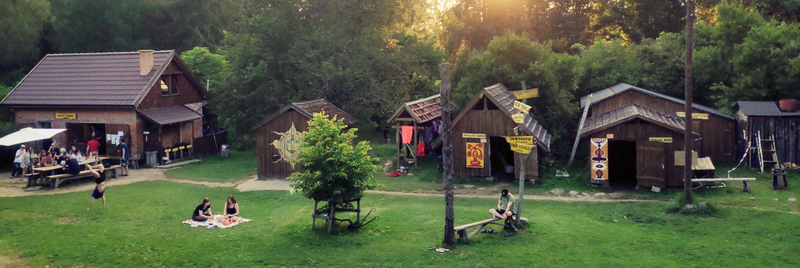
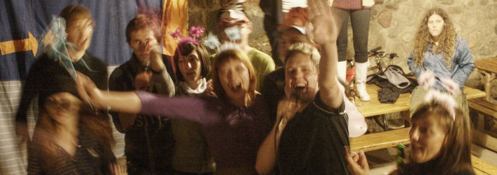
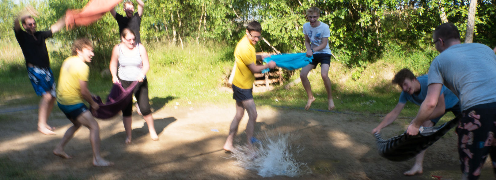

Kiedy? 6–18 lipca 2025 (od niedzieli!)
Gdzie? Przystanek Alaska, Gliśno Wielkie, Bory Tucholskie
6 lipca 2025 jest niedziela, kto przyjedzie w sobotę, zostanie wyproszony i będzie miło widziany w niedzielę.
W tym roku wyjątkowo bo ze względu na ECG nastąpiło spiętrzenie i poprzedzający nas Larpart kończy się również wyjątkowo w sobotę a nie tydzień wcześniej. A zarówno orgowie Larparta jak i załoga ma mnóstwo roboty, żeby ogarnąć Alaskę w dobę i kręcenie się pod nogami ‘bo ja nikomu nie przeszkadzam tylko…’ - NO NIE! Zatem do niedzieli bo będzie burda.
Od ponad dwudziestu lat Letnia Szkoła Go jest organizowana na terenie gospodarstwa agroturystycznego “Przystanek Alaska” położonego nad jeziorem – niesłychanie malowniczego, przepięknego i spokojnego regionu Borów Tucholskich.
Na Letniej Szkole Go odbywają się codzienne zajęcia oraz wiele turniejów bardziej i mniej poważnych, goistycznych i niegoistycznych.

Na wyposażeniu gospodarstwa znajdują się:

Klimat tego miejsca jest stylizowany na serial “Przystanek Alaska” – polityką właścicieli to zapewnienie wysokiej klasy obsługi z elementami survivalu i relaksu.
Bliższe informacje można znaleźć na stronie Alaski, gdzie jest dużo zdjęć i dodatkowych informacji. Jest to naprawdę niezwykłe miejsce i polecam je każdemu.
